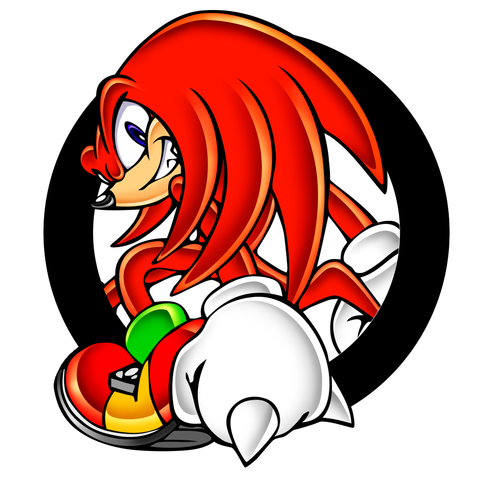
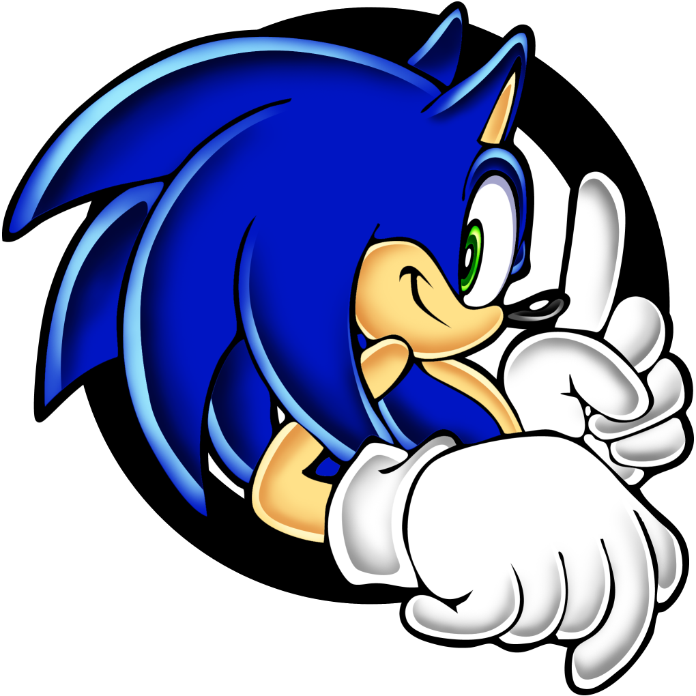
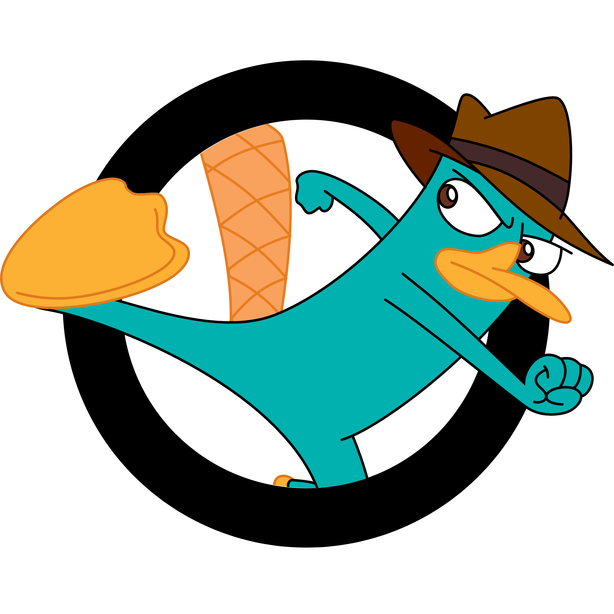
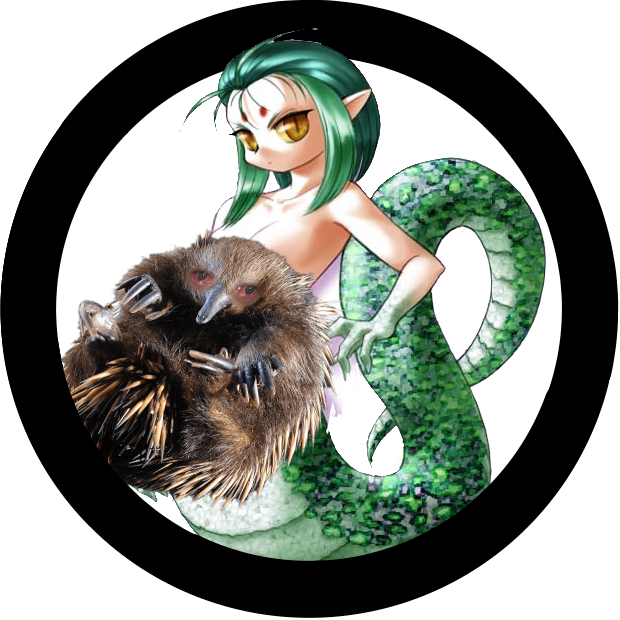
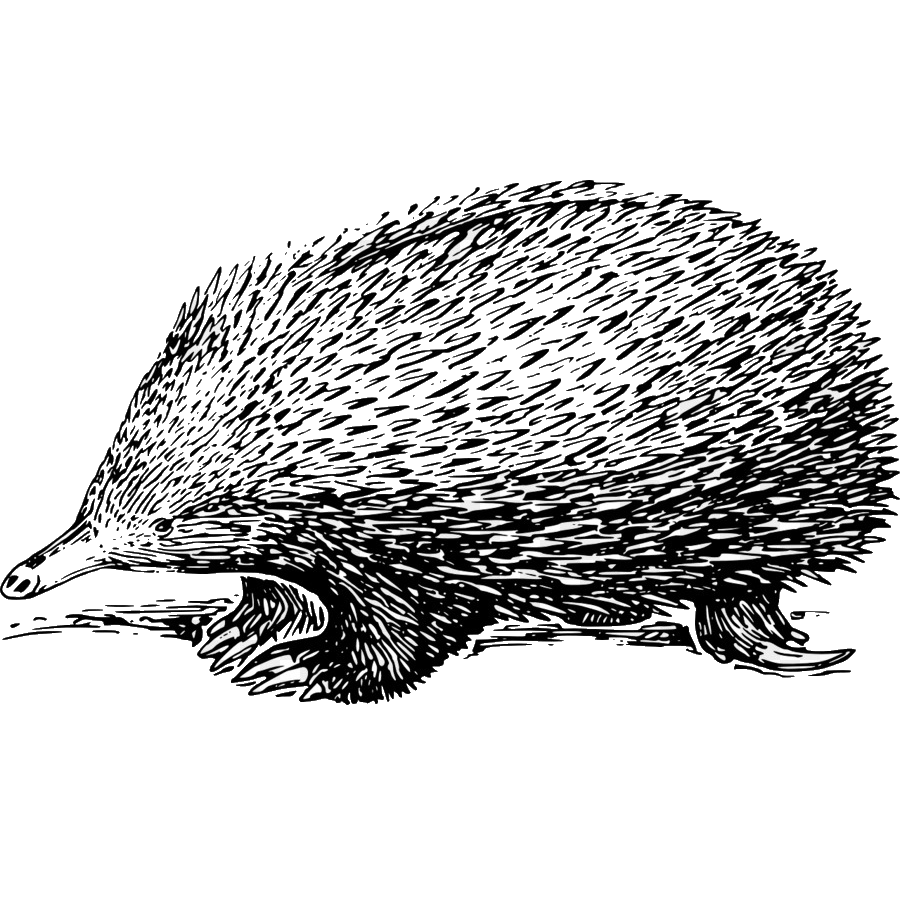
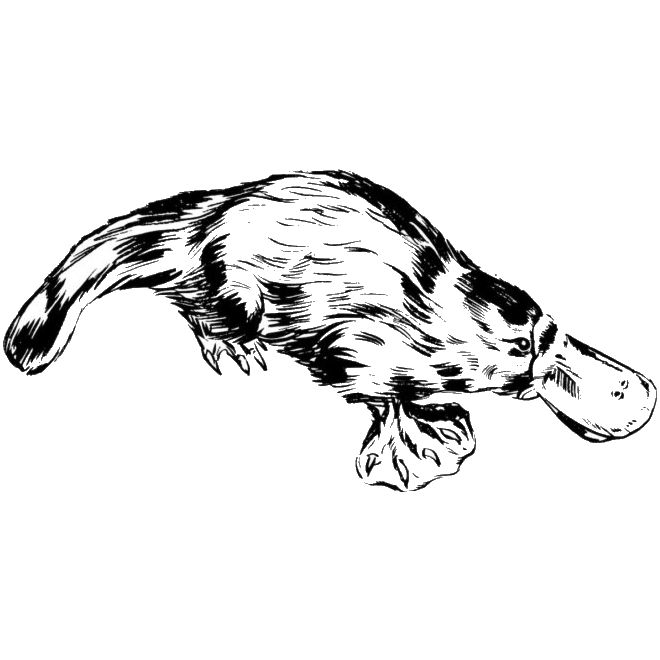

Sobre nós
Somos uma organização não governamental muito interessada em animais exóticos! Acreditamos que podemos aprender muito com esses pequeninos e também explorar novas perspectivas de como viver com a natureza e as energias ao nosso redor.
A AIEAEAO tem foco em espalhar alegria e conforto para seus membros e dar a eles um lugar para chamar de casa. Amamos porder compartilhar o que sabemos sobre essas criaturas vistas com tão mau gosto pela sociedade e mostrar que também importam, também importamos! Não deixem nunca que te digam o contrário!!
Sobre ovos e espinhos
-
Sabia que o Knuckles do sonic é, na verdade, uma equidna? Sim! Seu nome completo é Knuckles, a equidna, isso explica os espinhos!
 -

Menção honrosa para o Sonic que é um ouriço.
-
Perry o Ornitorrinco de Phineas e Ferb é um ornitorrinco muito famoso!
 -

Sabia que na mitologia grega há uma deusa chamada Equidna? Ela é mãe de todos os monstros mitólogicos, agora não sei se basearam o nome do animal nisso. Coitada da equidna...
Wiki
Acesse uma das nossas páginas da wiki para saber mais sobre seu animal favorito!
-

Equidnas
-

Ornintorrincos
FAQ
-
Queremos cactos!!!?
Não.
-
Porque ornintorrincos e equidnas?
R: Por que eles são irados! Veneno, espinhos, ovos, ecolocalização... eles têm de tudo!
-
Qual você prefere: um ornintorrinco ou uma equidna?
R: Não sei! É como se você perguntasse qual meu filho favorito, ou qual rim eu vendo primeiro.
-
Vocês sabem que não podem copiar o nome da música do System of a Down sem permição e colocar um copyright, né?? Irei processar vocês!
R: Oi colega, system of o quê? Não sei do que você está falando, mas tenho certeza que não é legal falar assim com os outros na internet! 😘
-
Porque não ouriços?
R: Olha, por mais que gostamos dos espinhos e de ouriços, há lugar para apenas um espinhnto aqui! Senão teríamos q colocar porcos-espinhos também. blé!
-
Amei a referência!
R: ??? Certamente você também vai amar nosso conteúdo exclusivo de adoção de pets! pet.html
-
Amo o trabalho de vocês aqui! Sigo de perto o progresso mesmo do outro lado do mundo!
R: Que legal! Agradecemos muito seu apoio, também te amo!
Contate-nos
Você pode nos encontrar nesse endereço. Boa sorte!